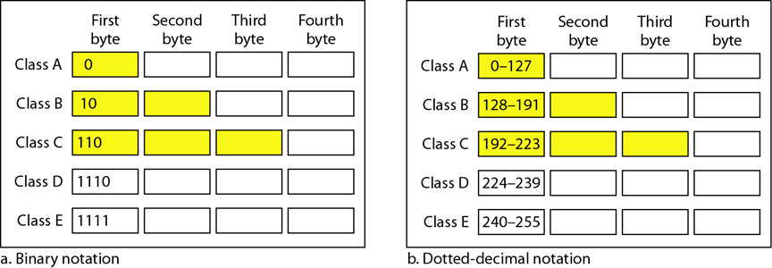
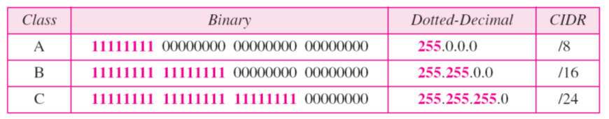
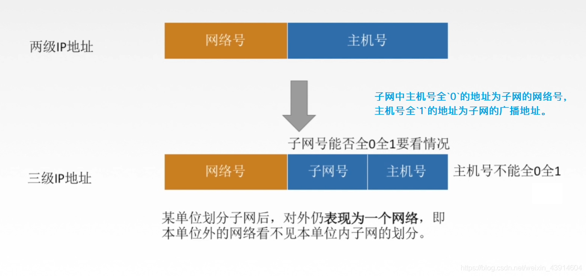
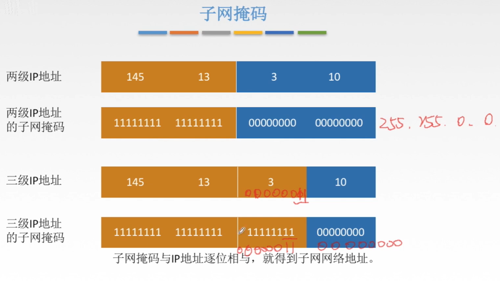
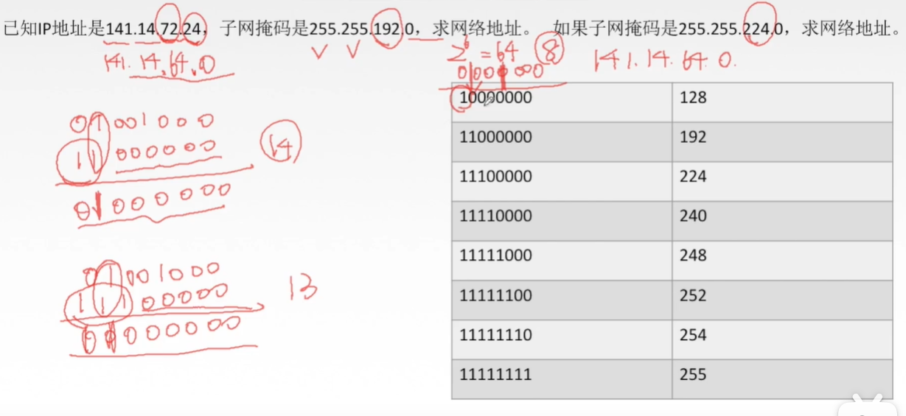
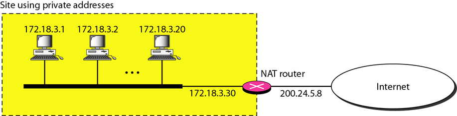
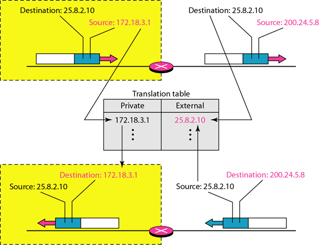
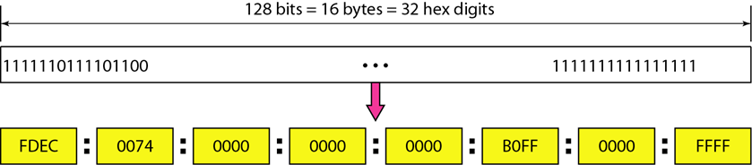
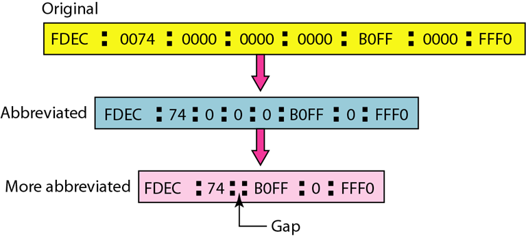

第 19 章 逻辑寻址
一. IPv4地址
A、B、C、D 和 E 类地址、掩码、子网和超网的概念
- IPv4地址（IPv4 address）是一个32位地址
- 是唯一的与通用的。
- IPv4的地址空间是232或4 294 967 296。
- 使用二进制标记法和点分十进制标记法
- 二进制标记法: 二进制表示, 八位一个空格
- 点分十进制: 每个字节表示为十进制数, 中间用小数点分割
分类寻址：ABCDE
- A类地址(Class A address)是为那些具有大量的主机或路由器的大型组织机构所设计的。
- B类地址(Class B address)是为那些可能具有数万台主机或路由器的中型组织机构所设计的。
- C类地址(Class C address)是为那些具有少量主机或路由器的小型组织机构所设计的。
- 在分类寻址中，大部分可用的地址被浪费了。
- 在A类中，一个字节定义网络号而三个字节定义主机号。在B类中，二个字节定义网络号，二个字节定义主机号。在C类中，三个字节定义网络号而一个字节定义主机号。

掩码
- 用连续1的串后跟连续0的串组成的一个32位掩码(mask)(也称为默认掩码(default mark))。
- 掩码能帮助我们找到网络号和主机号。
- A、B、C类的掩码表：

子网和超网的概念
- 子网化：
- 如果一个组织机构指派A类或B类中 一大块地址，它可将这些地址划分为几个类组，并赋予每一组为较小的网络(称为子网，subnet)。
- 子网化是在掩码中增加1的个数。
- 超网化：
- 一个组织机构能将几个C类块地址构成更大范围的地址空间。将几个网络联合起来构成一个超网（supernet）。
- 超网化是在掩码中减小1的个数。
无类寻址
- 没有类的概念, 但是仍划分为地址块
- 地址块的限制条件
- 块中地址必须连续
- 块中地址个数必须为 2 的整数次幂
- 块的起始地址必须能被块中地址个数整除
- 通过 CIDR 标记法定义块地址
- x.y.z.t/n
- 其中 /n 为掩码, n 为掩码中 1 的位数 (掩码中的 1 必定连续)
- 起始地址: 通过将块中某个地址的后 32-n 位置为 0 求得 (也就是把地址和掩码进行与运算)
- 最后的地址: 通过将块中某个地址的后 32-n 位置为 1 求得（可用给定地址与掩码的反码进行OR运算）
- 地址个数: 掩码求反，十进制数+1
- 网络地址: 代表整个网络, 通常是块的起始地址
二. 子网划分方法、子网范围计算



三. NAT 的概念
- 网络地址转换(network address translation, NAT)能使用户在内部拥有大量的地址，而在外部只有少量的地址。
- 内部通信能使用内部的地址，而外部通信能使用外部地址。

NAT实现

NAT地址转换
四. IPv6 地址及其缩短形式
16 个字节, 128 位
采用十六进制冒号标记法
- 每两个字节一部分, 作为四个十六进制数字
- 每部分之间用冒号分隔

IPv6 地址用二进制与十六进制冒号标记法
缩短，需满足：
- 在两个冒号之间 (所以开头和结尾不能缩短)
- 高位的连续的 0 可以缩短
- 若有连续的几个部分仅包含 0, 则可以把这些 0 用两个冒号代替, 但这种缩短只能用一次
